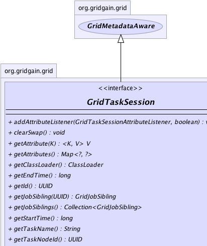
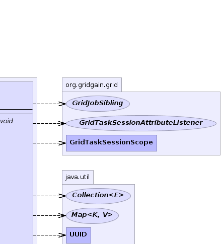
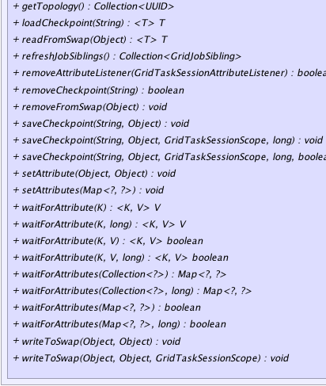
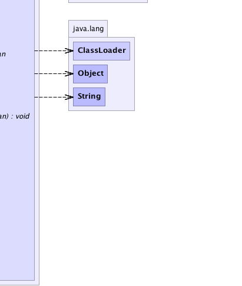

|
|

|
|

|

|

|
GridGain™ 3.1.1c
Community Edition |
|||||||||
| PREV CLASS NEXT CLASS | FRAMES NO FRAMES | |||||||||
| SUMMARY: NESTED | FIELD | CONSTR | METHOD | DETAIL: FIELD | CONSTR | METHOD | |||||||||
public interface GridTaskSession
Defines a distributed session for particular task execution.
Session has 2 main features: attribute and checkpoint
management. Both attributes and checkpoints can be used from task itself and
from the jobs belonging to this task. Session attributes and checkpoints can
be set from any task or job methods. Session attribute and checkpoint consistency
is fault tolerant and is preserved whenever a job gets failed over to
another node for execution. Whenever task execution ends, all checkpoints
saved within session with GridTaskSessionScope.SESSION_SCOPE scope
will be removed from checkpoint storage. Checkpoints saved with
GridTaskSessionScope.GLOBAL_SCOPE will outlive the session and
can be viewed by other tasks.
The sequence in which session attributes are set is consistent across the task and all job siblings within it. There will never be a case when one job sees attribute A before attribute B, and another job sees attribute B before A. Attribute order is identical across all session participants. Attribute order is also fault tolerant and is preserved whenever a job gets failed over to another node.
waitForAttribute(...) methods. Tasks and jobs can also
receive asynchronous notifications about a certain attribute being set
through GridTaskSessionAttributeListener listener. Such feature
allows grid jobs and tasks remain connected in order
to synchronize their execution with each other and opens a solution for a
whole new range of problems.
Imagine for example that you need to compress a very large file (let's say terabytes in size). To do that in grid environment you would split such file into multiple sections and assign every section to a remote job for execution. Every job would have to scan its section to look for repetition patterns. Once this scan is done by all jobs in parallel, jobs would need to synchronize their results with their siblings so compression would happen consistently across the whole file. This can be achieved by setting repetition patterns discovered by every job into the session. Once all patterns are synchronized, all jobs can proceed with compressing their designated file sections in parallel, taking into account repetition patterns found by all the jobs in the split. Grid task would then reduce (aggregate) all compressed sections into one compressed file. Without session attribute synchronization step this problem would be much harder to solve.
@GridTaskSessionResource
annotation to a field or a setter method inside of GridTask or
GridJob implementations as follows:
... // This field will be injected with distributed task session. @GridTaskSessionResource private GridTaskSession ses; ...or from a setter method:
// This setter method will be automatically called by the system
// to set grid task session.
@GridTaskSessionResource
void setSession(GridTaskSession ses) {
this.ses = ses;
}
GridTaskSession refer to
HelloWorld Distributed Task Session Example
on Wiki.
| Wiki | |
| Forum |
|  |  |
|  |  |
| Method Summary | ||
|---|---|---|
void |
addAttributeListener(GridTaskSessionAttributeListener lsnr,
boolean rewind)
Add listener for the session attributes. |
|
void |
clearSwap()
Clears the swap space associated with this session. |
|
|
getAttribute(K key)
Gets an attribute set by GridTaskSession.setAttribute(Object, Object) or GridTaskSession.setAttributes(Map)
method. |
|
Map<?,?> |
getAttributes()
Gets all attributes. |
|
ClassLoader |
getClassLoader()
Gets class loader responsible for loading all classes within task. |
|
long |
getEndTime()
Gets end of computation time for the task. |
|
UUID |
getId()
Gets session ID of the task being executed. |
|
GridJobSibling |
getJobSibling(UUID jobId)
Gets job sibling for a given ID. |
|
Collection<GridJobSibling> |
getJobSiblings()
Gets a collection of all grid job siblings. |
|
long |
getStartTime()
Gets start of computation time for the task. |
|
String |
getTaskName()
Gets task name of the task this session belongs to. |
|
UUID |
getTaskNodeId()
Gets ID of the node on which task execution originated. |
|
Collection<UUID> |
getTopology()
Gets a collection of grid nodes IDs. |
|
|
loadCheckpoint(String key)
Loads job's state previously saved via GridTaskSession.saveCheckpoint(String, Object, GridTaskSessionScope , long)
method from an underlying storage for a given key. |
|
|
readFromSwap(Object key)
Reads data previously stored by GridTaskSession.writeToSwap(Object, Object, GridTaskSessionScope)
method. |
|
Collection<GridJobSibling> |
refreshJobSiblings()
Refreshes collection of job siblings. |
|
boolean |
removeAttributeListener(GridTaskSessionAttributeListener lsnr)
Removes given listener. |
|
boolean |
removeCheckpoint(String key)
Removes previously saved job's state for a given key from an underlying storage. |
|
void |
removeFromSwap(Object key)
Removes data previously stored by GridTaskSession.writeToSwap(Object, Object, GridTaskSessionScope)
method. |
|
void |
saveCheckpoint(String key,
Object state)
Saves intermediate state of a job or task to a storage. |
|
void |
saveCheckpoint(String key,
Object state,
GridTaskSessionScope scope,
long timeout)
Saves intermediate state of a job to a storage. |
|
void |
saveCheckpoint(String key,
Object state,
GridTaskSessionScope scope,
long timeout,
boolean override)
Saves intermediate state of a job or task to a storage. |
|
void |
setAttribute(Object key,
Object val)
Sets session attributed. |
|
void |
setAttributes(Map<?,?> attrs)
Sets task attributes. |
|
|
waitForAttribute(K key)
Waits for the specified attribute to be set. |
|
|
waitForAttribute(K key,
long timeout)
Waits for the specified attribute to be set. |
|
|
waitForAttribute(K key,
V val)
Waits for the specified attribute to be set or updated with given value. |
|
|
waitForAttribute(K key,
V val,
long timeout)
Waits for the specified attribute to be set or updated with given value. |
|
Map<?,?> |
waitForAttributes(Collection<?> keys)
Waits for the specified attributes to be set. |
|
Map<?,?> |
waitForAttributes(Collection<?> keys,
long timeout)
Waits for the specified attributes to be set. |
|
boolean |
waitForAttributes(Map<?,?> attrs)
Waits for the specified attributes to be set or updated with given values. |
|
boolean |
waitForAttributes(Map<?,?> attrs,
long timeout)
Waits for the specified attributes to be set or updated with given values. |
|
void |
writeToSwap(Object key,
Object val)
Writes data to swap space defaulting to GridTaskSessionScope.SESSION_SCOPE lifetime scope. |
|
void |
writeToSwap(Object key,
Object val,
GridTaskSessionScope scope)
Writes data to swap space. |
|
| Methods inherited from interface org.gridgain.grid.GridMetadataAware |
|---|
addMeta, addMetaIfAbsent, addMetaIfAbsent, allMeta, copyMeta, copyMeta, hasMeta, hasMeta, meta, putMetaIfAbsent, putMetaIfAbsent, removeMeta, removeMeta, replaceMeta |
| Method Detail |
|---|
String getTaskName()
UUID getTaskNodeId()
long getStartTime()
long getEndTime()
UUID getId()
ClassLoader getClassLoader()
Note that for classes that were loaded remotely from other nodes methods
Class.getResource(String) or ClassLoader.getResource(String)
will always return null. Use
Class.getResourceAsStream(String) or ClassLoader.getResourceAsStream(String)
instead.
Collection<GridJobSibling> getJobSiblings() throws GridException
If task uses continuous mapper (i.e. it injected into task class) then job siblings will be requested from task node for each apply.
GridException - If job siblings can not be received from task node.
Collection<GridJobSibling> refreshJobSiblings() throws GridException
GridTaskContinuousMapper),
list of siblings on remote node may not be fresh. In that case, this method
will re-request list of siblings from originating node.
GridException - If refresh failed.
@Nullable
GridJobSibling getJobSibling(UUID jobId)
throws GridException
If task uses continuous mapper (i.e. it injected into task class) then job sibling will be requested from task node for each apply.
GridException - If job sibling can not be received from task node.jobId - Job ID to get the sibling for.
void setAttribute(Object key,
@Nullable
Object val)
throws GridException
GridTaskSessionAttributeListener
callback than an attribute has changed.
This method is no-op if the session has finished.
GridException - If sending of attribute message failed.key - Attribute key.val - Attribute value. Can be null.@Nullable <K,V> V getAttribute(K key)
GridTaskSession.setAttribute(Object, Object) or GridTaskSession.setAttributes(Map)
method. Note that this attribute could have been set by another job on
another node.
This method is no-op if the session has finished.
K - Attribute key type.V - Attribute value type.key - Attribute key.
void setAttributes(Map<?,?> attrs) throws GridException
GridTaskSession.setAttribute(Object, Object)
method, whenever you need to set multiple attributes.
This method is no-op if the session has finished.
GridException - If sending of attribute message failed.attrs - Attributes to set.Map<?,?> getAttributes()
void addAttributeListener(GridTaskSessionAttributeListener lsnr,
boolean rewind)
lsnr - Listener to add.rewind - true value will result in calling given listener for all
already received attributes, while false value will result only
in new attribute notification. Settings rewind to true
allows for a simple mechanism that prevents the loss of notifications for
the attributes that were previously received or received while this method
was executing.boolean removeAttributeListener(GridTaskSessionAttributeListener lsnr)
lsnr - Listener to remove.
true if listener was removed, false otherwise.@Nullable <K,V> V waitForAttribute(K key) throws InterruptedException
InterruptedException - Thrown if wait was interrupted.K - Attribute key type.V - Attribute value type.key - Attribute key to wait for.
<K,V> boolean waitForAttribute(K key, @Nullable V val) throws InterruptedException
InterruptedException - Thrown if wait was interrupted.K - Attribute key type.V - Attribute value type.key - Attribute key to wait for.val - Attribute value to wait for. Can be null.
<K,V> V waitForAttribute(K key, long timeout) throws InterruptedException
InterruptedException - Thrown if wait was interrupted.K - Attribute key type.V - Attribute value type.key - Attribute key to wait for.timeout - Timeout in milliseconds to wait for. 0 means indefinite wait.
<K,V> boolean waitForAttribute(K key, @Nullable V val, long timeout) throws InterruptedException
InterruptedException - Thrown if wait was interrupted.K - Attribute key type.V - Attribute value type.key - Attribute key to wait for.val - Attribute value to wait for. Can be null.timeout - Timeout in milliseconds to wait for. 0 means indefinite wait.
Map<?,?> waitForAttributes(Collection<?> keys) throws InterruptedException
InterruptedException - Thrown if wait was interrupted.keys - Attribute keys to wait for.
boolean waitForAttributes(Map<?,?> attrs) throws InterruptedException
InterruptedException - Thrown if wait was interrupted.attrs - Key/value pairs to wait for.
Map<?,?> waitForAttributes(Collection<?> keys, long timeout) throws InterruptedException
InterruptedException - Thrown if wait was interrupted.keys - Attribute keys to wait for.timeout - Timeout in milliseconds to wait for. 0 means indefinite wait.
boolean waitForAttributes(Map<?,?> attrs, long timeout) throws InterruptedException
InterruptedException - Thrown if wait was interrupted.attrs - Key/value pairs to wait for.timeout - Timeout in milliseconds to wait for. 0 means indefinite wait.
void saveCheckpoint(String key,
Object state)
throws GridException
GridCheckpointSpi implementation used.
Long running jobs may decide to store intermediate state to protect themselves from failures.
This way whenever a job fails over to another node, it can load its previously saved state via
GridTaskSession.loadCheckpoint(String) method and continue with execution.
This method defaults checkpoint scope to GridTaskSessionScope.SESSION_SCOPE and
implementation will automatically remove the checkpoint at the end of the session. It is
analogous to calling saveCheckpoint(String, Serializable, GridCheckpointScope.SESSION_SCOPE, 0.
GridException - If failed to save intermediate job state.key - Key to be used to load this checkpoint in future.state - Intermediate job state to save.GridTaskSession.loadCheckpoint(String),
GridTaskSession.removeCheckpoint(String),
GridCheckpointSpi
void saveCheckpoint(String key,
Object state,
GridTaskSessionScope scope,
long timeout)
throws GridException
GridCheckpointSpi implementation used.
Long running jobs may decide to store intermediate state to protect themselves from failures.
This way whenever a job fails over to another node, it can load its previously saved state via
GridTaskSession.loadCheckpoint(String) method and continue with execution.
The life time of the checkpoint is determined by its timeout and scope.
If GridTaskSessionScope.GLOBAL_SCOPE is used, the checkpoint will outlive
its session, and can only be removed by calling GridCheckpointSpi.removeCheckpoint(String)
from Grid or another task or job.
GridException - If failed to save intermediate job state.key - Key to be used to load this checkpoint in future.state - Intermediate job state to save.scope - Checkpoint scope. If equal to GridTaskSessionScope.SESSION_SCOPE, then
state will automatically be removed at the end of task execution. Otherwise, if scope is
GridTaskSessionScope.GLOBAL_SCOPE then state will outlive its session and can be
removed by calling removeCheckpoint(String) from another task or whenever
timeout expires.timeout - Maximum time this state should be kept by the underlying storage. Value 0 means that
timeout will never expire.GridTaskSession.loadCheckpoint(String),
GridTaskSession.removeCheckpoint(String),
GridCheckpointSpi
void saveCheckpoint(String key,
Object state,
GridTaskSessionScope scope,
long timeout,
boolean override)
throws GridException
GridCheckpointSpi implementation used.
Long running jobs may decide to store intermediate state to protect themselves from failures.
This way whenever a job fails over to another node, it can load its previously saved state via
GridTaskSession.loadCheckpoint(String) method and continue with execution.
The life time of the checkpoint is determined by its timeout and scope.
If GridTaskSessionScope.GLOBAL_SCOPE is used, the checkpoint will outlive
its session, and can only be removed by calling GridCheckpointSpi.removeCheckpoint(String)
from Grid or another task or job.
GridException - If failed to save intermediate job state.key - Key to be used to load this checkpoint in future.state - Intermediate job state to save.scope - Checkpoint scope. If equal to GridTaskSessionScope.SESSION_SCOPE, then
state will automatically be removed at the end of task execution. Otherwise, if scope is
GridTaskSessionScope.GLOBAL_SCOPE then state will outlive its session and can be
removed by calling removeCheckpoint(String) from another task or whenever
timeout expires.timeout - Maximum time this state should be kept by the underlying storage. Value 0 means that
timeout will never expire.override - Whether or not override checkpoint if it already exists.GridTaskSession.loadCheckpoint(String),
GridTaskSession.removeCheckpoint(String),
GridCheckpointSpi@Nullable <T> T loadCheckpoint(String key) throws GridException
GridTaskSession.saveCheckpoint(String, Object, GridTaskSessionScope , long)
method from an underlying storage for a given key. If state was not previously
saved, then null will be returned. The storage implementation is defined by
GridCheckpointSpi implementation used.
Long running jobs may decide to store intermediate state to protect themselves from failures. This way whenever a job starts, it can load its previously saved state and continue with execution.
GridException - If failed to load job state.T - Type of the checkpoint state.key - Key for intermediate job state to load.
null if no state was found for a given key.GridTaskSession.removeCheckpoint(String),
GridCheckpointSpi
boolean removeCheckpoint(String key)
throws GridException
key from an underlying storage.
The storage implementation is defined by GridCheckpointSpi implementation used.
Long running jobs may decide to store intermediate state to protect themselves from failures. This way whenever a job starts, it can load its previously saved state and continue with execution.
GridException - If failed to remove job state.key - Key for intermediate job state to load.
true if job state was removed, false if state was not found.GridTaskSession.loadCheckpoint(String),
GridCheckpointSpi
void writeToSwap(Object key,
@Nullable
Object val,
GridTaskSessionScope scope)
throws GridException
GridException - Thrown in case of any errors.key - Data key.val - Data value.scope - Swap space scope. If GridTaskSessionScope.SESSION_SCOPE, then
data will be automatically removed at the task completion. If
GridTaskSessionScope.GLOBAL_SCOPE, then data will not be automatically
removed and can be reused from different tasks.
void writeToSwap(Object key,
@Nullable
Object val)
throws GridException
GridTaskSessionScope.SESSION_SCOPE lifetime scope.
GridException - Thrown in case of any errors.key - Data key.val - Data value.@Nullable <T> T readFromSwap(Object key) throws GridException
GridTaskSession.writeToSwap(Object, Object, GridTaskSessionScope)
method.
GridException - Thrown in case of any errors.key - Data key.
void removeFromSwap(Object key)
throws GridException
GridTaskSession.writeToSwap(Object, Object, GridTaskSessionScope)
method.
GridException - Thrown in case of any errors.key - Data key.
void clearSwap()
throws GridException
GridException - Thrown in case of any errors.Collection<UUID> getTopology() throws GridException
GridTopologySpi implementation used to obtain a topology for the task's split.
GridException - Thrown in case of any errors.
|
GridGain™ 3.1.1c
Community Edition |
|||||||||
| PREV CLASS NEXT CLASS | FRAMES NO FRAMES | |||||||||
| SUMMARY: NESTED | FIELD | CONSTR | METHOD | DETAIL: FIELD | CONSTR | METHOD | |||||||||
|
GridGain = High Performance Cloud Computing
|
|
|
|